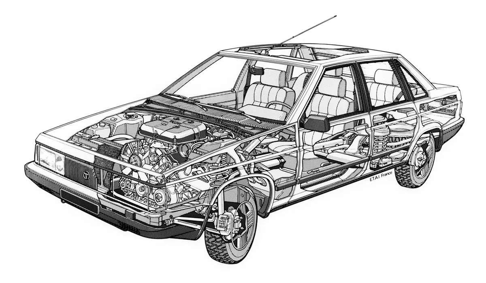

ВАЗ-2108 «Спутник» (просторечные названия — «восьмёрка» или «зубило») — советский и российский
переднеприводной автомобиль II группы малого класса с кузовом типа трёхдверный хэтчбек.
История
Разработка началась в конце 1970-х годов. Первый эскиз ВАЗ-2108 датирован ещё маем 1977 года, в
конце декабря 1978 года на заводе был собран первый опытный образец.
Серийно выпускался на Волжском автомобильном заводе в 1984–2003 годах. Представлял собой базовую
модель в семействе моделей «Лада „Спутник“».
С 2004 года на конвейере автомобиль был заменён рестайлинговой моделью ВАЗ-2113.
Переднеприводная схема давно привлекала автомобильных конструкторов, но массовый переход в мире
на такие модели начался лишь в середине 1970-х годов. При этом, даже в условиях европейской
дорожной сети их распространение сдерживалось недостаточной проработанностью конструкции и
технологии узлов привода колёс, рулевого управления, подвески силового агрегата. Однако
поперечное расположение силового агрегата и передние ведущие колёса при существовавшем тогда
уровне развития техники уже позволяли сделать автомобиль малого класса компактнее и легче
обычного. Проект переднеприводного автомобиля начал разрабатываться Волжским автозаводом в 1971
году. С 1971 по 1977 годы на заводе было спроектировано и построено несколько опытных образцов
переднеприводных машин. Проектирование ВАЗ-2108 было начато в мае 1977 года. 17 февраля 1978
года Министерство автомобильной промышленности СССР утвердило техническое задание ВАЗу на
семейство переднеприводных автомобилей. К этому моменту на заводе уже имелась вполне
отработанная концепция будущей машины. Первый прототип ВАЗ-2108 был готов в конце 1978 года, а в
феврале 1979-го начались его лабораторные испытания. Некоторые узлы и агрегаты ВАЗ-2108
разрабатывались совместно с западными компаниями Porsche и UTS. 29 мая 1979 года вышло
постановление Совета министров СССР № 470 «О разработке и освоении на Волжском автозаводе
семейства переднеприводных автомобилей». Официально о создании в Тольятти новой модели легкового
автомобиля объявил министр автомобильной промышленности В. Н. Поляков в своём выступлении на
XXVI съезде КПСС в феврале 1981 года. Он сообщил, что в одиннадцатой пятилетке на ВАЗе будет
создана машина с передними ведущими колёсами, не связанная по конструкции и технологии с
выпускаемыми «Жигулями» классической компоновки.
Производство первой партии из 2000 товарных автомобилей было начато 17 декабря 1984 года, 22
декабря 1984 первые серийные ВАЗ-2108 сошли с конвейера, а в первой половине 1985 года
автомобили стали поступать в магазины по цене 8345 руб. 80 % всех средств, выделяемых
могущественному ГКНТ (Государственному комитету по науке и технике) для закупки лицензий и новых
образцов оборудования для всех отраслей промышленности СССР, в то время осваивал ВАЗ. Всего было
закуплено около 20. В частности, у фирмы Lucas — на передние дисковые тормоза и вакуумный
усилитель тормозов, у Zahnradfabrik — на реечный рулевой механизм и синхронизаторы коробки
передач, у Automotiv Prodax — на сцепление, у Way-Assauto — на стойки передней подвески, у Hardy
Spicer — на шарниры равных угловых скоростей, у Solex — на карбюратор. Позднее купили балку
задней подвески у Volkswagen. У Michelin приобрели лицензию и технологическое оборудование для
производства бескамерной радиальной шины с металлокордом размерности 165/70R13 (позднее к ней
добавился вариант с шириной профиля в 175 мм). Технологический партнёр Fiat — фирма UTS —
оказывала ВАЗу помощь в организации нового производства и налаживании оборудования.
В августе 1986 года начался экспорт автомашин ВАЗ-2108 в ФРГ (они продавались под названием
«LADA SAMARA» фирмой «Дойче Лада аутомобиль»), за первые 12 месяцев в ФРГ было продано свыше 8
тысяч автомобилей этой модели.
ВАЗ-2108 вписан в тайм-линию историй Porsche под названием The Lada Samara−1984.
Конструкция
Кузов
Кузов ВАЗ-2108 имеет трёхдверную цельнометаллическую сварную несущую конструкцию. Автомобиль
обладает вариантами как пассажирского, так и грузопассажирского кузова. Все детали и узлы
кузова, кроме навесных, составляют собой единое целое, сваренное контактной точечной сваркой, а
сильно нагруженные детали дополнительно приварены электродуговой сваркой. Основные детали кузова
штампуют из листовой малоуглеродистой стали. Толщина основных деталей кузова составляет 0,8 мм,
а наружных панелей дверей и передних крыльев — 0,7 мм, усилителей — 1-1,2 мм. Мелкие детали
штампуют из стали толщиной 0,8-2,5 мм.

Ходовая часть
На автомобиле установлен четырёхцилиндровый четырёхтактный карбюраторный или инжекторный
двигатель объёмом цилиндров 1100 см³, 1300 см³ или 1500 см³ (в зависимости от модификации) с
рядным расположением цилиндров с распредвалом в головке цилиндров с приводом от зубчатого ремня.
Двигатель специально спроектирован для поперечного расположения на переднеприводном автомобиле.
Двигатель в сборе с коробкой передач и сцеплением образует силовой агрегат, установленный в
моторном отсеке на трёх эластичных опорах.
В зависимости от комплектации автомобиля, устанавливается четырёх- или пятиступенчатая коробка
передач. Полость картера коробки передач объединена с главной передачей. Крутящий момент от
главной передачи передаётся на ведущие колёса через приводы передних колёс со ШРУСами. На
автомобиль устанавливается рулевой механизм реечного типа.
Передний тормозной механизм — дисковый, открытый. Задний — барабанный, с автоматической
регулировкой зазора между колодками и барабаном. На ВАЗ-2108 применяется однопроводная схема
соединений (минус на массе). На модификации ВАЗ-21083 устанавливается микропроцессорная система
управления двигателем.
Подвеска
На автомобиле установлена торсионно-рычажная подвеска задних колёс типа «качающаяся свеча» или
МакФерсон. Направляющим устройством подвески являются два продольных рычага, соединённых между
собой упругим соединителем. Независимость хода каждого колеса обеспечивается за счёт скручивания
усилителя, имеющего U-образное сечение, которое обладает большой жёсткостью на изгиб и малой —
на кручение.
Амортизатор задней подвески — гидравлический, телескопический, двухстороннего действия.
Упругие элементы подвески состоят из пружины и буфера хода сжатия. Пружина выполнена из
пружинной стали круглого сечения. Она установлена на амортизаторе.
Пружины задней подвески, как и передней, под контрольной нагрузкой по длине делятся на два
класса — А и Б. Пружины класса А маркируются жёлтой краской по внешней стороне средних витков,
класса Б — зелёной.
Модификации
ВАЗ-2108 — базовая модель автомобиля с карбюраторным двигателем объёмом 1,3 литра и 4- или
5-ступенчатой КПП.
ВАЗ-2108-01 — аналогичная модели 2108, выпускавшаяся в первые годы выпуска (примерно до февраля
1987 года). Имеет множество отличий от обычной 2108, а также обилие импортных комплектующих.
ВАЗ-21081 — модель с двигателем объёмом 1,1 литра и 4-ступенчатой КПП.
ВАЗ-21083 — модель с двигателем объёмом 1,5 литра и 5-ступенчатой КПП.
ВАЗ-21083-20 — модель с инжекторным двигателем объёмом 1,5 литра и 5-ступенчатой КПП.
ВАЗ-21083-37 — модель с инжекторным двигателем объёмом 1,5 литра и 5-ступенчатой КПП для участия
в НГС «Кубок Лада».
ВАЗ-21086 — аналогичная базовой экспортная модель с правым расположением рулевого управления.
ВАЗ-21087 — аналогичная модели ВАЗ-21081 экспортная модель с правым расположением рулевого
управления.
ВАЗ-21088 — аналогичная модели ВАЗ-21083 экспортная модель с правым расположением рулевого
управления.
ВАЗ-2108-91 — модель с двухсекционным РПД ВАЗ-415 мощностью 140 л. с., объёмом 1308 см³.